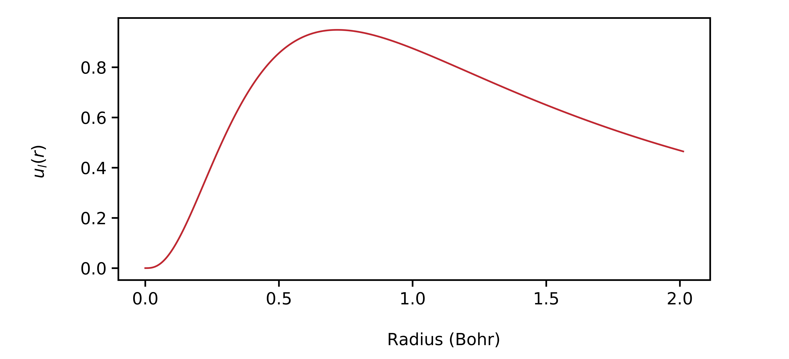
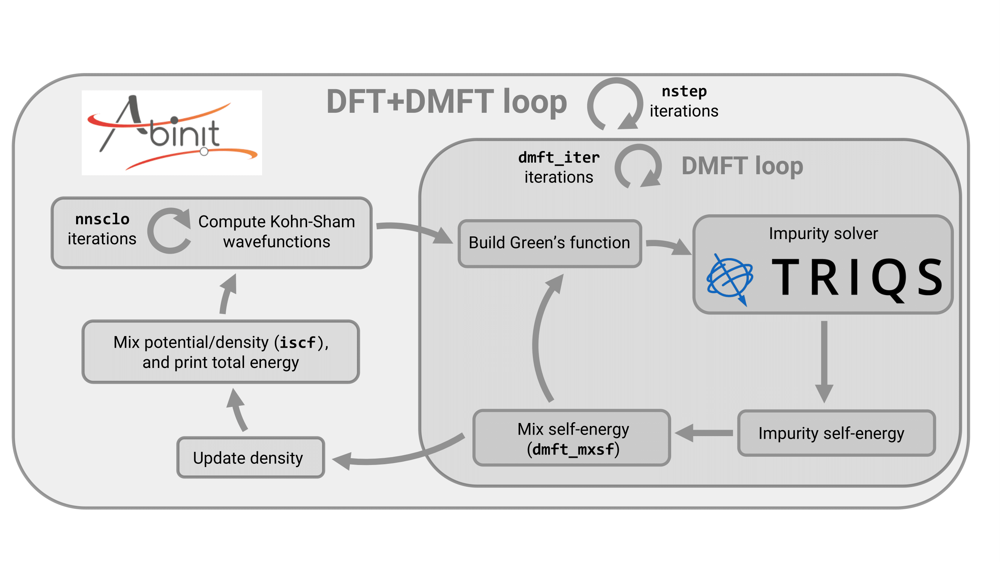

Tutorial on DFT+DMFT with TRIQS/CT-HYB¶
1. Introduction¶
In this tutorial, you will learn how to run a DFT+DMFT calculation on iron using the interface between ABINIT and TRIQS/CT-HYB. TRIQS/CT-HYB is used as the impurity solver, while ABINIT drives the calculation and connects to TRIQS/CT-HYB as an external library.
Before starting, you should already know how to do a basic DFT calculation with ABINIT (see basic1, basic2, basic3, and basic4). It also helps if you are familiar with PAW (see PAW1 and PAW2) and DFT+U. There is also a tutorial on the ABINIT’s internal DMFT solvers (see DMFT), but the two DMFT tutorials are independent.
We also recommend that you are comfortable with TRIQS/CT-HYB, and we will assume you already have at least a basic idea of how the DFT+DMFT method works.
The whole tutorial should take a few hours to complete.
Note
Supposing you made your own installation of ABINIT, the input files to run the examples are in the ~abinit/tests/ directory where ~abinit is the absolute path of the abinit top-level directory. If you have NOT made your own install, ask your system administrator where to find the package, especially the executable and test files.
In case you work on your own PC or workstation, to make things easier, we suggest you define some handy environment variables by executing the following lines in the terminal:
export ABI_HOME=Replace_with_absolute_path_to_abinit_top_level_dir # Change this line
export PATH=$ABI_HOME/src/98_main/:$PATH # Do not change this line: path to executable
export ABI_TESTS=$ABI_HOME/tests/ # Do not change this line: path to tests dir
export ABI_PSPDIR=$ABI_TESTS/Pspdir/ # Do not change this line: path to pseudos dir
Examples in this tutorial use these shell variables: copy and paste
the code snippets into the terminal (remember to set ABI_HOME first!) or, alternatively,
source the set_abienv.sh script located in the ~abinit directory:
source ~abinit/set_abienv.sh
The ‘export PATH’ line adds the directory containing the executables to your PATH so that you can invoke the code by simply typing abinit in the terminal instead of providing the absolute path.
To execute the tutorials, create a working directory (Work*) and
copy there the input files of the lesson.
Most of the tutorials do not rely on parallelism (except specific tutorials on parallelism). However you can run most of the tutorial examples in parallel with MPI, see the topic on parallelism.
2. Presentation¶
ABINIT comes with its own internal DMFT code and solvers, but they are not numerically exact and rely on the density-density approximation. TRIQS/CT-HYB, on the other hand, can handle the full interaction Hamiltonian.
Our interface makes it easy to run charge self-consistent DFT+DMFT calculations on real materials with just a single input file. It is designed to give the accuracy and rigor needed for computing structural properties, including a stationary DFT+DMFT implementation, with the computation of the Baym-Kadanoff functional, the use of the exact double counting formula, and an analytical evaluation of the high-frequency moments of the Green’s function in a self-consistent fashion. That said, our interface does not handle toy models - TRIQS’s Python API and built-in tools already handle those efficiently.
Even though our interface with TRIQS/CT-HYB roughly follows the internal DMFT implementation of ABINIT, there are a few important differences in input variables or available features, and it is more than just swapping out the impurity solver.
The input variables that are specific to the TRIQS/CT-HYB solver start with dmft_triqs_, and
many of them are direct copies of TRIQS/CT-HYB’s own API inputs - so if you have used TRIQS
before, you should not get lost.
On the other hand, variables related to ABINIT’s internal segment solver start with
dmftctqmc_ or dmftqmc_. These don’t apply here, so you can safely ignore them for this
tutorial.
Finally, variables that control the self-consistent cycle itself start with dmft_. Most of
these are shared between the internal DMFT and the TRIQS/CT-HYB interface, but some features
are available only in one or the other. The glossary clearly points out when that is the case.
If you want a good overview of all input variables relevant for the TRIQS/CT-HYB interface, we recommend checking out the dedicated topic. Their detailed documentation can be found in the DMFT variable glossary. We highly recommend to check it out after you finish this, as we only introduce the most important variables in this tutorial.
3. Installation¶
First, you need to install TRIQS, and then TRIQS/CT-HYB.
Our interface is compatible with the official version of TRIQS/CT-HYB, which you can find
here. At the time of writing, our interface handles
versions 3.2.x and 3.3.x.
However, the official implementation is not suited for large systems or calculations that require high accuracy,
hence we also provide our internal version, found here (download the develop branch).
Install it as you would with the official fork. The installation instructions are indicated on their website.
Our internal version contains additional features which we implemented, meant to reduce the computation time for structural properties calculations:
- an improved proposal distribution for the insert/remove moves (dmft_triqs_pauli_prob)
- an improved estimator for the density matrix (dmft_triqs_time_invariance)
- the possibility to automatically restart the CT-HYB from the previous configuration, in order to reduce the warmup time (dmft_triqs_read_ctqmcdata)
We highly recommend to use our internal version, as these features are paramount for an accurate calculation of structural properties.
CT-HYB calculations can be very computationally demanding, so take your time when compiling and pick an efficient BLAS implementation, as it can make a big difference in performance.
After that, you need to reconfigure ABINIT to link it with TRIQS. Add the following line to your
.ac9 configuration file:
with_triqs="yes"
The library should be found automatically if the paths to the TRIQS and TRIQS∕CT-HYB libraries are included in your environment variables. If you are using the complex version of TRIQS/CT-HYB, also add:
enable_triqs_complex="yes"
Next, make sure your options are recognized correctly and that ABINIT can successfully link to TRIQS and compile a test code. When configuring, pay attention to these lines:
checking whether you are linked against the internal TRIQS library... [yes|no]
checking whether you are linked against the official >=3.2.x TRIQS API... [yes|no]
and:
checking whether to enable the complex version of TRIQS... [yes|no]
The first line indicates whether our internal version has been found, and the second line whether the official version has been found, depending on which you choose to install.
The third line indicates whether or not you are using the complex version of TRIQS/CT-HYB
instead of the real version. Including the imaginary part of the Green’s function can be important
in systems with strong spin-orbit coupling, and you can activate it by configuring your TRIQS/CT-HYB
installation with -DHybridisation_is_complex=ON and -DLocal_hamiltonian_is_complex=ON.
This tutorial has been written with the real version of our internal fork.
If something goes wrong at this step, carefully check the config.log file. Ask yourself: Why did the
test code fail to compile ? Was the library found and linked properly ?
Tip
Our interface requires linking to MPI, so make sure that ABINIT uses the MPI wrappers when compiling. You can manually select them with CC=mpicc, CXX=mpicxx and FC=mpif90. When compiling ABINIT with gcc, the following Fortran flags (which can be manually set via FCFLAGS) are required: -ffree-line-length-none and -fallow-argument-mismatch. As we are linking with a C++ code, the Fortran flag -lstdc++ is also required, and depending on your MPI library, the -lmpi_cxx flag could also be necessary. For the TRIQS flags (which can be set via TRIQS_LDFLAGS), linking is required to the libraries: -L/path_to_triqs -lcppdlr_c -lh5_c -lnda_c -ltriqs -ltriqs_cthyb_c (assuming all libraries are in the same directory). All of this should be done automatically, but we indicate here how to do it manually in case you encounter some issue.
As a last resort, if you still can’t solve the issue, post a question on the ABINIT user forum.
Once everything is set, simply compile ABINIT.
4. Fatbands of Fe within DFT¶
Before jumping into the DFT+DMFT calculation for Fe, it is useful to first get some physical insight into its electronic structure at the DFT level. This will help later when choosing some of the key DMFT parameters.
We will start by computing the density of states (DOS), the band structure, and the fatbands. A fatband plot shows how much of a given angular character (like \(s\), \(p\), or \(d\)) each Kohn-Sham wavefunction has for every band and \(k\)-point - the thicker the line, the stronger that orbital’s contribution.
Go to the tutorial input directory, make a new working folder, and copy the first input file:
cd $ABI_TESTS/tutoparal/Input
mkdir Work_dmft_triqs
cd Work_dmft_triqs
cp ../tdmft_triqs_1.abi .
# Multi_dataset parameters ndtset 2 # Two datasets jdtset 1 2 # one followed by two getden -1 # Second one takes the density of first pawprtvol 3 # Printing additional information prtvol 4 # ############################ # Structural Parameters ############################ #Definition of unit cell acell 3*5.44761 # lattice parameter rprim -0.5 0.5 0.5 # Primitive cell 0.5 -0.5 0.5 0.5 0.5 -0.5 #Definition atom ntypat 1 # number of different types of atoms znucl 26 # z number of atom #Definition of the atoms natom 1 # number of atom typat 1 # type of atom xred 0.0 0.0 0.0 # reduced coordinates for primitive cell #Definition pseudopotentials pp_dirpath "$ABI_PSPDIR" # repository with pseudopotentials pseudos "26fe.lda2.paw" #Definition of the k-point grid kptopt 1 ngkpt 4 4 4 # Reciprocal space vectors are built from # the rprim parameters. This is the size of the # reciprocal k-points. nshiftk 2 # Convergence of the density with regular shifts. shiftk 0.25 0.25 0.25 -0.25 -0.25 -0.25 istwfk *1 ############################ # Energy Parameters ############################ ecut 20 # Maximal plane-wave kinetic energy cut-off, in Hartree pawecutdg 40 # PAW: Energy Cutoff for the Double Grid nband 20 # Number of bands occopt 3 # Smearing type tsmear 300 K # Electronic smearing temperature ############################ # DFT Calculation ############################ nstep1 30 # Number of iterations for the DFT convergence tolwfr 1.0d-10 # Tolerance of the density for DFT convergence #Definition of the spin properties nsppol 1 # No spin-polarization nspden 1 # No Scalar magnetism nspinor 1 # No Spin-orbit prtdos1 3 prtdosm1 1 ############################ # Fatbands Calculation ############################ nbandkss2 2 kssform2 3 pawfatbnd2 1 # Fatbands, resolved for each angular momentum iscf2 -2 kptopt2 -5 # Band structure: 5 segments ndivk2 18 12 21 25 18 # Length of each segment kptbounds2 # The 5 segments are connecting 6 points of the # Brillouin zone, given here. 0.0 0.0 0.0 # Gamma 0.0 1/2 0.0 # N 1/4 1/4 1/4 # P 0.0 0.0 0.0 # Gamma -1/2 1/2 1/2 # H 0.0 1/2 0.0 # N
Launch the input file with ABINIT. For the rest of this tutorial, we will run everything on 4 CPUs, but feel free to use more if you can:
mpirun -n 4 abinit tdmft_triqs_1.abi > log 2>&1
While it runs, take a look at the input file. It has two datasets:
- A DFT dataset to compute the DOS and the density.
- A non self-consistent dataset to compute the band structure along a specific \(k\)-path in the Brillouin zone (defined by kptbounds).
The fatbands are computed using the variable pawfatbnd. Here, it is set to \(1\), meaning fatbands are computed for each angular momentum \(l\). If you want orbitally resolved fatbands, set it to \(2\) instead.
Once the calculation finishes, you will find:
- The DOS in the file:
tdmft_triqs_1o_DS1_DOS_AT0001 - The fatbands in files named like:
tdmft_triqs_1o_DS2_FATBANDS_at0001_Fe_is1_l000x- one for each angular momentum.
For Fe, we are mainly interested in the \(3d\) electrons, since they are the most strongly correlated.
You can plot the results using any plotting software you like - or simply use the provided Python scripts:
python3 ../dmft_triqs_scripts/plot_dos.py
python3 ../dmft_triqs_scripts/plot_fatbands.py
You should get something like this for the DOS:

and this for the \(d\) fatbands:

From the DOS, you can see that most of the \(d\)-electron spectral weight lies close to the Fermi level, within an energy window of about \(5\) eV.
From the fatbands, you can tell that while the strongest \(d\) character is indeed around the Fermi level, it is not confined to the \(3d\) bands (bands \(6-10\)). There is significant hybridization with the \(4s\) (band \(5\)) and \(4p\) (bands \(11-13\)) states, and even some weaker but noticeable hybridization with higher bands.
So when you move to the DMFT calculation, you will need to be careful in selecting which bands to include, to make sure you capture as much of the \(d\) spectral weight as possible.
5. Charge self-consistent DFT+DMFT calculation on Fe¶
We will now walk you through the basics of running a charge self-consistent DFT+DMFT calculation, using iron as an example. Along the way, we will introduce the main input variables you need to know, show you how our implementation works, and go over the output files. We will also look at the main convergence parameters and share some tips on how to choose their values wisely.
Before we start, an important note: do not use the values from our example input file as reference for your own convergence parameters. We intentionally picked small values here to keep the runtime reasonable. Our implementation is purposely strict about this - we do not provide default values for many parameters, because we want users to choose them consciously.
Indeed, we feel that most of the inconsistencies found in DFT+DMFT results across the literature come from poorly chosen convergence parameters. So, always perform proper convergence tests, and redo them for each system you study.
Alright, let’s dive in. Start by copying the second input file and running it with ABINIT. Feel free to use more CPUs if you have them available:
cp ../tdmft_triqs_2.abi .
mpirun -n 4 abinit tdmft_triqs_2.abi > log2 2>&1
# Multi_dataset parameters ndtset 2 # Two datasets jdtset 1 2 # one followed by two getden -1 # Second one takes the density of first pawprtvol 3 # Printing additional information prtvol 4 ############################ # Structural Parameters ############################ #Definition of unit cell acell 3*5.44761 # lattice parameter from J Phys. Condens. Matt rprim -0.5 0.5 0.5 # Primitive cell 0.5 -0.5 0.5 0.5 0.5 -0.5 #Definition atom ntypat 1 # number of different types of atoms znucl 26 # z number of atom #Definition of the atoms natom 1 # number of atoms typat 1 # type of atom xred 0.0 0.0 0.0 # reduced coordinates for primitive cell #Definition pseudopotentials pp_dirpath "$ABI_PSPDIR" # repository with pseudopotentials pseudos "26fe.lda2.paw" #Definition of the k-point grid kptopt 1 ngkpt 6 6 6 # Reciprocal space vectors are built from # the rprim parameters. This is the size of the # reciprocal k-points. nshiftk 2 # Convergence of the density with regular shifts. shiftk 0.25 0.25 0.25 -0.25 -0.25 -0.25 istwfk *1 ############################ # Energy Parameters ############################ ecut 20 # Maximal plane-wave kinetic energy cut-off, in Hartree pawecutdg 40 # PAW: Energy Cutoff for the Double Grid nband 20 # Number of bands occopt 3 # Smearing type tsmear 3000 K # Electronic smearing temperature ############################ # DFT Calculation ############################ nstep1 30 # Number of iterations for the DFT convergence tolvrs1 1.0d-12 # Tolerance of the density for DFT convergence #Definition of the spin properties nsppol 1 # Spin polarized nspden 1 # Collinear magnetism nspinor 1 # No Spin-orbit ############################ # DMFT Calculation ############################ usedmft2 1 # DMFT calculation nstep2 20 # Number of iterations for the DFT+DMFT convergence nline2 10 # Number of line minimisations nnsclo2 10 # Number of non-self consistent loops tolvrs2 1.0d-12 # Tolerance of the density for DFT+DMFT convergence #Definition for DMFT loop dmftbandi 5 # First KS band included in the projection for Wannier orbitals dmftbandf 13 # Last KS band included in the projection for Wannier orbitals dmft_iter 1 # Number of iterations of the DMFT part. dmft_dc 6 # AMF double counting dmft_prtself 0 # Do not print self-energy at each iteration dmft_prt_maxent 0 # Do not print files for analytical continuation dmft_mxsf 1.0 # Mixing parameter for self-energy #Definition of impurity solver dmft_solv 6 # TRIQS/CT-HYB solver in density-density approximation dmft_triqs_n_iw 500 # Number of Matsubara frequencies dmft_triqs_n_tau 200 # Number of imaginary time points dmft_triqs_n_cycles 250 # Number of measurement cycles dmft_triqs_n_warmup_cycles_init 100 # Number of warmup cycles for initial iteration dmft_triqs_n_warmup_cycles_restart 0 # Number of warmup cycles when restarting dmft_triqs_length_cycle 100 # Length of a cycle dmft_triqs_basis 0 # Basis for CT-QMC dmft_triqs_off_diag 0 # Neglect off-diagonal elements dmft_triqs_dlr_wmax 30 eV # Maximal frequency for DLR representation dmft_triqs_dlr_epsilon 1.d-2 # Accuracy of DLR representation #Definition of interaction parameters usepawu1 4 usepawu2 14 # Non-magnetic XC potential lpawu 2 # Angular momentum for the projected Hamiltonian upawu1 0.00 eV upawu2 5.5 eV # Values of U for each angular momentum jpawu2 0.84 eV # Values of J
This calculation might take a few minutes, so while it runs, let’s take a look at the input file and see what’s going on.
A charge self-consistent DFT+DMFT calculation usually consists of two datasets:
- The first one is a DFT calculation (that should be in principle well converged).
- The second one is a DFT+DMFT calculation, which starts from the DFT output density of the first dataset.
We won’t revisit the DFT parameters or how to converge them here - that is already covered in the DFT tutorials. However, remember that once you include DMFT, you’ll likely need to readjust your parameters and redo your convergence studies. For instance, you will often need to converge your Kohn-Sham wavefunctions more tightly by increasing nline and nnsclo.
Also, the electronic temperature (set via tsmear\(=1/\beta\)) becomes much more important when DMFT is active, since temperature effects are explicitly included in the impurity solver - unlike in the DFT exchange-correlation functional, where they are usually neglected.
Here, we use a CT-HYB solver, which represents the Green’s function \(G(\tau)\) on the imaginary time axis, with \(\tau\) ranging from \(0\) to \(\beta\). Because the impurity problem becomes more complex as \(\beta\) increases, we are choosing a high temperature (tsmear\(=3000 \, \mathrm{K}\)) to keep things simpler and faster for this example.
For the second dataset, we start by activating DMFT, setting usedmft\(=1\).
5.1 Correlated Electrons¶
Next, we need to choose which angular momentum channel (\(s\),\(p\),\(d\),…) we want to treat as correlated within DMFT. Each channel corresponds to a value of \(l=0,1,2\)…, and we select it using the variable lpawu, just like in DFT+U.
For each atom type, you specify the value of \(l\) you want to apply DMFT to, each value being separated by a whitespace. If you do not want to apply DMFT on a given atom type, simply set lpawu\(=-1\) for this type.
Each correlated channel will then correspond to \(2 \times (2l+1)\) orbitals per correlated atom - the factor of \(2\) accounts for spin degeneracy, and the \(2l+1\) comes from the different magnetic quantum numbers \(m = -l,...l\). Keep in mind that the complexity of the impurity problem increases exponentially with this number of orbitals, so choosing your correlated channel wisely is important.
Note
At the moment, only values of lpawu \(\le 3\) are supported - anything higher would be computationally impractical anyway. Besides, you can only select one unique value of lpawu per type of atom.
In our iron example, the localized orbitals that show strong correlation effects are the \(3d\) orbitals. Since there is only one atom type (Fe), we simply set lpawu\(=2\).
Note
In the case lpawu\(=2\), you can select specific values of \(m\) with dmft_t2g (\(m=-2,-1\) and \(1\)) and dmft_x2my2d (\(m=2\)), which is useful for cubic symmetry.
5.2 Correlated Orbital¶
Now that we have defined which angular momentum channel we are treating as correlated, we need to specify the radial part of the correlated orbital - the reduced radial wavefunction \(u_l(r)\).
Our convention for the local orbitals follows ABINIT’s internal PAW convention: \(\frac{u_l(r)}{r} Y_{lm}(\hat{r})\) where \(Y_{lm}(\hat{r})\) are real spherical harmonics.
The choice of the radial wavefunction is made through the variable dmft_orbital. For iron, the \(3d\) orbitals remain quite localized and keep their atomic character, so we just take the lowest-energy atomic orbital from the PAW dataset (truncated at the PAW radius). That is the default choice, dmft_orbital\(=1\), but you can pick any orbital from your PAW dataset or even provide a custom one from a file if needed (the latter is explained in section \(7\) of this tutorial).
Tip
More generally, you should pick a radial orbital that captures as much spectral weight as possible in DMFT, especially near the Fermi level, since that’s where electron correlations have the biggest impact.
When the calculation starts, you can see how the radial orbital is defined in the log2 file, right
at the beginning of the self-consistent cycle:
===== Build DMFT radial orbital for atom type 1 ========
Using atomic orbital number 1 from PAW dataset
Squared norm of the DMFT orbital: 0.8514
This lets you check the normalization of the orbital. The radial function \(u_l(r)\) is also written
to the file tdmft_triqs_2o_DS2_DMFTORBITAL_itypat0001.dat. You can plot it with your favorite tool
- for instance, all DMFT-related outputs are compatible with xmgrace. If you plot this file, you
should see the \(3d\) atomic orbital from your PAW dataset, truncated at the PAW radius:

5.3 Energy window¶
Unfortunately, we cannot directly compute the lattice Green’s function over the full Hilbert space - it would be far too computationally demanding. Instead, we restrict ourselves to a smaller subspace \(\mathcal{H}\), made up of low-energy basis elements. We then downfold this projected Green’s function onto the local orbitals defined by dmft_orbital in order to retrieve the local Green’s function.
But notice: this is actually the same as downfolding the full lattice Green’s function onto the projection of dmft_orbital onto \(\mathcal{H}\).
Therefore, the DMFT local orbitals that are effectively handled in the code are not exactly the ones defined by dmft_orbital, but rather their projection on \(\mathcal{H}\).
In our implementation, the lattice Green’s function is represented in the Kohn-Sham basis, and our low-energy Hilbert space is built from all Kohn-Sham wavefunctions whose band indices fall between dmftbandi and dmftbandf - the range that defines the correlated energy window.
Note
We would like to emphasize, however, that when we compute the trace of the Green’s function - for instance, to locate the Fermi level - we include all bands (from \(1\) to nband). This differs from many implementations that limit themselves strictly to the correlated energy window.
Since Kohn-Sham wavefunctions form a complete basis, you could in theory recover the original orbital defined by dmft_orbital by setting dmftbandi to \(1\) and converging dmftbandf to infinity.
The choice of your energy window is therefore critical. It directly governs both the spatial spread of your orbital and your computation time.
- A wider energy window yields a more localized orbital, but also increases hybridization with the bath. Since we use a hybridization-expansion impurity solver, a larger hybridization significantly slows down the solver and the evaluation of the Green’s function.
- A narrower energy window may leave out part of the spectral weight of your target orbital dmft_orbital. In this case, the projected orbital may become too extended, potentially overlapping with neighboring atoms. That would violate a key approximation of the method - that interatomic elements of the Green’s function can be neglected.
The latter is extremely important since if this approximation breaks, the very important identity
Downfold(Upfold) = Identity might break down, which can lead to inaccuracies and unstability.
You can check the deviation in the log2 file:
== Check downfold(upfold)=identity ==
--- !WARNING
src_file: m_matlu.F90
src_line: 1373
message: |
Differences between Downfold(Upfold) and
Identity is too large:
0.1284E-03 is larger than 0.1000E-03
...
As an exercise, you can check that this deviation becomes lower whenever you increase the energy window.
As shown earlier from the fatband analysis, the main spectral weight for the \(d\) orbitals lie between bands \(5\) and \(13\), so we use this as our energy window, though a larger energy window would be ideal to decrease the deviation of Downfold(Upfold) from the identity.
Once the orbitals have been projected onto this low-energy subspace, they might no longer be orthogonal.
You can inspect this in the log2 file:
== The DMFT orbitals are now projected on the correlated bands
== Check: Downfolded Occupations and Norm of unnormalized projected orbitals
------ Symmetrized Occupations
-------> For Correlated Atom 1
-- polarization spin component 1
0.50385 0.00000 0.00000 0.00000 -0.00000
0.00000 0.50385 -0.00000 0.00000 0.00000
0.00000 0.00000 0.45679 0.00000 0.00000
0.00000 0.00000 0.00000 0.50385 0.00000
-0.00000 0.00000 0.00000 0.00000 0.45679
------ Symmetrized Norm
-------> For Correlated Atom 1
-- polarization spin component 1
0.80454 0.00000 0.00000 0.00000 0.00000
0.00000 0.80454 0.00000 0.00000 -0.00000
0.00000 0.00000 0.80154 0.00000 0.00000
-0.00000 0.00000 0.00000 0.80454 -0.00000
0.00000 -0.00000 0.00000 0.00000 0.80154
Here, the occupation and overlap matrices are
shown. More generally, all local operators are printed in matrix form in the log file,
sorted by spin and increasing magnetic quantum number \(m\).
By default, all quantities are output in the real spherical harmonics (cubic) basis. The only exception
occurs when data is passed to the CT-HYB solver, which requires a rotation to the CT-QMC basis (see
section \(5.10\)). Wherever a basis change occurs, it is clearly indicated in the
log.
As shown above, the norms of the projected orbitals are slightly below the original atomic value (which wasn’t normalized to begin with). Try increasing dmftbandf, and you will see the norms approach the true atomic value of \(0.8514\).
The projected orbitals are next promoted to proper Wannier functions by orthonormalizing them via the scheme specified by dmft_wanorthnorm.
5.4 Interaction tensor¶
In a solid, the correlated electrons do not interact via the bare Coulomb potential - their interaction is screened by all the other electrons in the system. Because of this, you need to provide the screened interaction tensor \(U_{ijkl}\), as DFT+DMFT is not a formalism that allows its computation in an ab-initio way.
In our implementation, we use the Slater parametrization, which expresses the full interaction tensor in terms of just a few Slater integrals \(F^k\) (\(k = 2i\), with \(i = 0, l\)) by assuming the screened potential to have spherical symmetry.
By default, the ratios \(F^k / F^2\) (for \(k \ge 4\)) are kept at their atomic values, which is usually a good approximation for \(3d\) transition metals and rare-earth elements. If you want to adjust them manually, you can do so via the variables f4of2_sla and f6of2_sla.
Once these ratios are fixed, the two remaining Slater integrals \(F^0\) and \(F^2\) can be determined uniquely from the average screened interaction \(U\) and the screened Hund’s exchange \(J\). These parameters have clear physical meanings — \(U\) sets the overall interaction strength, while \(J\) controls the tendency of electrons to align their spins. You can set them for each atom type using upawu and jpawu.
There are several ways to compute these parameters directly within ABINIT — for example, using cRPA or linear response - but those are beyond the scope of this tutorial. Here, we will simply treat \(U\) and \(J\) as input parameters.
Keep in mind that these are matrix elements of the screened potential, meaning their values depend on the shape of the local orbitals. So, if you change your energy window, you may need to readjust \(U\) and \(J\).
For this example, we will use the same parameters as in [Han2018] — \(U = 5.5\) eV and \(J = 0.84\) eV — since their chosen energy window is similar to ours.
5.5 Self-consistent cycle¶
A charge self-consistent DFT+DMFT calculation involves two nested loops:
- The outer DFT+DMFT loop, whose number of iterations is controlled by nstep
- The inner DMFT loop, whose number of iterations is controlled by dmft_iter
This means the impurity solver is called a total of nstep \(\times\) dmft_iter times. Each inner DMFT loop is performed at fixed electronic density, and that density gets updated nstep times in total - once every dmft_iter DMFT iterations.
Here’s a schematic showing how the DFT+DMFT self-consistent cycle works:

When doing a charge self-consistent calculation, it is usually best to set dmft_iter\(=1\) and only adjust nstep to control convergence speed. That is because trying to reach self-consistency in the DMFT loop before the charge density converges just wastes time.
5.6 Magnetism¶
The next step is to decide what type of magnetism you want to include. Here, we choose nsppol\(=\)nspden\(=1\), which enforces a collinear paramagnetic solution by symmetrizing the two spin channels of the Green’s function. Even so, the impurity solver is solved with all spin channels, meaning local magnetic moments can still form.
Collinear magnetism can be enabled with nsppol\(=\)nspden\(=2\). In this case, it can sometimes be better to keep the DFT exchange-correlation potential non-magnetic and let magnetism emerge purely from DMFT, as approximate magnetic double counting formula can introduce an artifical spin dependence in the calculation. You can select a non-magnetic XC potential by setting usepawu\(=10\). Otherwise, set usepawu\(=14\) for a magnetic XC potential.
Finally, non-collinear calculations are also supported by our interface (nspinor\(=2\) and nspden\(=4\)).
5.7 Double counting¶
When combining DFT and DMFT, you run into the double counting problem - some of the local interactions are already partly included at the DFT level, so they need to be subtracted and replaced by their exact DMFT values.
ABINIT provides the exact double counting formula, though it is a bit more involved to use, so this is covered in section \(7\) of this tutorial.
There are also several simpler, commonly used approximate formulas, which you can select using the variable dmft_dc. Here, we choose dmft_dc\(=6\), corresponding to the AMF correction, better suited for metals.
5.8 Impurity solver¶
We haven’t yet told ABINIT to use the TRIQS/CT-HYB interface instead of its internal DMFT solvers. This is done with dmft_solv, which sets the impurity solver to be used.
For TRIQS/CT-HYB, there are two relevant options:
- dmft_solv\(=6\): Uses TRIQS/CT-HYB but keeps only the density-density terms in the interaction tensor. This is much faster, though if that’s what you need, a segment solver would be more efficient.
- dmft_solv\(=7\): Uses the full rotationally invariant Slater Hamiltonian, giving the most accurate treatment of interactions.
If instead you want to use ABINIT’s internal DMFT implementation with its built-in solvers, check out the dedicated DMFT tutorial.
5.9 Matsubara Mesh¶
In our implementation, the Green’s function is represented in imaginary frequencies as \(G(i\omega_n)\), and is computed exactly on the first dmft_triqs_n_iw = \(n_{i\omega}\) Matsubara frequencies, defined as \begin{equation*} \omega_n = (2n + 1)\frac{\pi}{\beta} \end{equation*}
During the calculation, several steps require integrating over all Matsubara frequencies. However, directly summing: \begin{equation*} \sum_{n=-n_{i \omega}}^{n_{i \omega}-1} G(i\omega_n) e^{i 0^{+}} \end{equation*} (with \(e^{i0^+}\) a small damping factor) would be impractical — it would take far too long to converge.
To make this efficient, we use a moment expansion of the Green’s function up to fifth order to handle the high-frequency behavior analytically:
\begin{equation*} \sum_{n=-\infty}^{\infty} G(i\omega_n) e^{i 0^{+}} \approx \sum_{n=-n_{i\omega}}^{n_{i\omega}-1} \left[ G(i\omega_n) - \sum_{j=1}^{5} \frac{G_j}{(i\omega_n)^j} \right] + \sum_{n=-\infty}^{\infty} \frac{G_j}{(i\omega_n)^j} e^{i 0^{+}} \end{equation*} where \(G_j\) are the moments of the Green’s function.
The first term is computed numerically, while the second term is handled analytically. Since the moments \(G_j\) are obtained analytically in our implementation, this approach is both efficient and guaranteed to converge to the exact result.
To ensure consistency, the code automatically compares this summation to the corresponding value for the DFT Green’s function, where the sum reduces to a Fermi–Dirac occupation factor. If the difference is too large, the code stops and raises an error — this is a helpful way to check whether your dmft_triqs_n_iw value is properly chosen.
You can find this check in your log2 file. If everything is working correctly, you’ll see lines similar to:
** Differences between occupations from DFT Green's function and
Fermi-Dirac occupations are small enough:
0.1460E-11 is lower than 0.1000E-03
and:
== Compute DFT Band Energy terms
Differences between band energy with Fermi-Dirac occupations
and occupations from DFT Green's function is: -0.000000
which is smaller than 0.00001
As you can see, this integration method is highly efficient — in this example, only about \(500\) frequencies were needed to reach excellent accuracy.
Tip
When you change the temperature, remember to increase the number of Matsubara frequencies linearly with \(\beta\) to maintain the same effective energy range.
5.10 CT-QMC basis¶
In the SCF cycle, we work in the cubic basis. However, even though dmft_solv\(=7\) is fully rotationally invariant and basis independent, the choice of solver basis can in practice have a huge impact on computation time.
Strong off-diagonal components in the hybridization function can make the sign problem worse. On the other hand, TRIQS/CT-HYB relies on conserved quantities (like angular momentum or spin) to partition the local Hilbert space of size \(2^{2 \times (2l+1)}\), which reduces the size of the matrices that need to be handled during the simulation. These conserved quantities are detected automatically, and their number depends strongly on the choice of basis.
TRIQS/CT-HYB prints the number of subspaces it finds:
Using autopartition algorithm to partition the local Hilbert space
Found 1024 subspaces.
A higher number of subspaces (thus with smaller dimensions) means smaller matrices, which reduces computation time. In this example, the local Hilbert space size is \(2^{10}=1024\) (\(l=2\)), and we see \(1024\) subspaces, each of dimension \(1\). Thus, we only handle scalars, and do not even need a matrix solver, as we make the density-density approximation in this example. You can check as an exercise that the matrix sizes will increase by setting dmft_solv\(=7\), depending again on your basis choice.
So, there is a trade-off: you want to reduce off-diagonal components and maximize the number of subspaces, which isn’t always easy. Fortunately, our interface provides many basis options that can be set via dmft_triqs_basis - check the glossary for all available choices.
Note
Even though our interface handles the full off-diagonal hybridization and Green’s function, some features are not available in this case. For instance, density matrix sampling (dmft_triqs_measure_density_matrix) cannot be performed, making the sampling of static observables (like energy or electron number) much noisier. We wish to emphasize that this limitation comes from TRIQS/CT-HYB itself, not our interface.
To simplify things, you can set the off-diagonal components to zero in the CT-QMC basis via dmft_triqs_off_diag\(=0\). Be careful, as the calculation is no longer numerically exact in this case.
In this example, we choose to stay in the cubic basis (dmft_triqs_basis\(=0\)) and neglect the off-diagonal components, since they vanish by symmetry anyway. The code then automatically detects and prints the most compact block structure of the hybridization function and electronic levels:
== Searching for the most optimal block structure of the electronic levels and the hybridization
== Solving impurity model for atom 1, where there are 10 blocks
--> Block 0 contains flavor 0
--> Block 1 contains flavor 1
--> Block 2 contains flavor 2
--> Block 3 contains flavor 3
--> Block 4 contains flavor 4
--> Block 5 contains flavor 5
--> Block 6 contains flavor 6
--> Block 7 contains flavor 7
--> Block 8 contains flavor 8
--> Block 9 contains flavor 9
== Schematic of the block structure
0 . . . . . . . . .
. 1 . . . . . . . .
. . 2 . . . . . . .
. . . 3 . . . . . .
. . . . 4 . . . . .
. . . . . 5 . . . .
. . . . . . 6 . . .
. . . . . . . 7 . .
. . . . . . . . 8 .
. . . . . . . . . 9
This allows TRIQS/CT-HYB to discard some irrelevant moves, and to optimize the computation of the determinant of the hybridization matrix. In our case, there are \(10\) blocks of size \(1\), as there are no off-diagonal components. The block detection algorithm can be tuned via dmft_triqs_tol_block.
5.11 CT-HYB parameters¶
The key controls for the TRIQS/CT-HYB solver are dmft_triqs_n_cycles, dmft_triqs_length_cycle, dmft_triqs_n_warmup_cycles_init and dmft_triqs_n_warmup_cycles_restart. These parameters are crucial for both performance and accuracy and should be carefully converged.
Every CT-QMC simulation begins with a warmup phase, where the Markov chain hasn’t reached equilibrium yet, so no measurements are taken. Each warmup phase consists of a number of cycles, and each cycle contains dmft_triqs_length_cycle sweeps.
There are two kinds of warmup:
- The initial warmup, triggered at the first DMFT iteration, when we start from scratch (i.e. an empty configuration) and no initial configuration is provided by the user via getctqmcdata. It is controlled by dmft_triqs_n_warmup_cycles_init, can be quite long, and must be carefully converged.
- The restart warmup, used from the second DMFT iteration onward, and at the first iteration if
a configuration file is provided via getctqmcdata. We automatically restart from the last saved
CT-QMC configuration (
tdmft_triqs_2o_DS2_CTQMC_DATA_iatom0001.h5), and thus the warmup can be much shorter, driven by dmft_triqs_n_warmup_cycles_restart - which can often be set to \(0\).
The restart behavior can be disabled by dmft_triqs_read_ctqmcdata as it can cause some issues in some rare occasions - at very low temperature for instance, when the configuration weights become extremely low.
After warmup, the solver moves into the measurement phase, which lasts dmft_triqs_n_cycles cycles. During this phase, observables are measured at the end of each cycle.
One key aspect to keep in mind is that only decorrelated/independent measurements matter for statistics. That is why dmft_triqs_length_cycle should in theory be set to match the autocorrelation time.
If it is too small, you are measuring correlated samples - wasting time on measurement - and if it is too big, you are discarding valid statistics - getting fewer meaningful samples.
In practice, to set this value, we advise you to keep increasing it until the time spent in measurement printed here:
Total measure time | 0.0910871
is negligible compared to the simulation time. Then, check that you haven’t lost statistics on your quantity of interest.
Tip
We do not advise to check the autocorrelation time printed by TRIQS/CT-HYB (unlike what is said in their tutorial), as an automatic measurement of this quantity is highly unreliable.
At the end of a CT-HYB simulation, you will see a summary of the different Monte-Carlo moves and their acceptance rates:
Move set Insert two operators: 0.401734
Move set Remove two operators: 0.404321
Move Shift one operator: 0.518682
These numbers give important clues about the sampling efficiency. If a move has a very low acceptance rate and is not essential for ergodicity, you can disable it, but be sure of what you are doing.
You will find detailed explanations of the moves on the TRIQS/CT-HYB website.
The key parameters to control the proposal distribution are dmft_triqs_move_double, dmft_triqs_move_shift and dmft_triqs_pauli_prob.
5.12 Local Hilbert space¶
In principle, the local impurity problem lives in a Hilbert space of size \(2^{2(2l+1)}\), which can get massive - especially for systems with \(f\) orbitals. In practice, you sometimes do not need to explore the entire space, because many Fock states appear so rarely in the Monte Carlo that their contribution does not matter.
To help you judge this, the code prints the probability of each Fock state into the file:
tdmft_triqs_2o_DS2_CTQMC_HISTOGRAM_iatom0001.dat. This file is produced only when the
reduced density matrix is being sampled.
Each line in the file corresponds to one Fock state and has three columns, for example:
2 1001000000 4.40261615217009198e-06
Here’s what the columns mean:
- Total number of electrons in the configuration
- Binary representation of the Fock state, with one bit per orbital: \(0\) = empty, and \(1\) = occupied. Orbitals are listed in increasing \(m\), first all spin-up, then all spin-down.
- Weight of the Fock state.
If you find that many configurations have essentially zero probability, you can truncate the Hilbert space by restricting the allowed number of electrons to the interval [ dmft_triqs_loc_n_min,dmft_triqs_loc_n_max ]. This can noticeably speed up the simulation.
However, be very careful: once you start cutting away configurations, ergodicity is no longer guaranteed, and these parameters must be checked and converged carefully.
By default, the code keeps the full Hilbert space.
5.13 Imaginary time¶
In the CT-HYB solver, both the hybridization function \(\Delta(\tau)\) and the Green’s function \(G(\tau)\) live in imaginary time, with \(\tau \in [0,\beta]\).
Even though the solver itself works in continuous time, the computer still needs a discrete grid to store and manipulate these objects. So in practice, both \(\Delta(\tau)\) and \(G(\tau)\) are represented on a uniform mesh: \begin{equation*} \tau_i = i \Delta \tau, i = 0,\text{n}_{\tau}-1 \end{equation*} with \(\Delta \tau = \beta / (\text{n}_{\tau}-1)\).
Inside the solver, the hybridization function is interpolated whenever a value is needed at an arbitrary time. For the Green’s function, the values are averaged over their time bin in order to produce more samples, and the value stored at each \(\tau_i\) is therefore a bin average, namely: \begin{equation*} G(\tau_i) = \frac{1}{\Delta \tau} \int_{\tau_i-\Delta \tau / 2}^{\tau_i+\Delta \tau / 2} G(\tau) d \tau \end{equation*}
This means that dmft_triqs_n_tau\(=\text{n}_{\tau}\) is a key convergence parameter: it governs both the interpolation error of \(\Delta(\tau)\) and the binning error in \(G(\tau)\). However, pushing the grid too fine is not automatically better - if the bins become too small, each bin receives fewer Monte Carlo samples, which increases statistical noise.
A practical rule of thumb is to keep the ratio dmft_triqs_n_cycles / dmft_triqs_n_tau large enough so each time bin is sufficiently populated.
Tip
When you change the temperature, remember that you should increase dmft_triqs_n_tau proportionally to \(\beta\) in order to keep the bin width \(\Delta \tau\) roughly constant.
5.14 Compact representation of the Green’s function¶
Working directly with \(G(\tau)\) on an imaginary-time grid has some drawbacks. Since \(\tau\) is discretized, the representation is not continuous, and the Fourier transform to Matsubara frequency can suffer from aliasing errors. To avoid this, we can store the Green’s function in a compact basis, using only a small number of basis functions \(f_l(\tau)\) whose Fourier transform is known analytically: \begin{equation*} G(\tau) = \sum_l G_l f_l(\tau) \end{equation*} with \(G_l\) the expansion coefficients.
We provide two compact bases. First, we have the Legendre representation [Boehnke2011], where: \begin{equation*} f_l(\tau) = P_l(2 \tau / \beta - 1) \end{equation*} with \(P_l\) the Legendre polynomial of order \(l\).
If you enable this representation by setting dmft_triqs_measure_g_l\(=1\), the Legendre coefficients are directly sampled in the Monte Carlo. In this case, the only parameter you need to converge is the number of coefficients dmft_triqs_n_l.
However, we recommend the more modern and much more efficient Discrete Lehmann representation (DLR) [Kaye2022], with basis functions: \begin{equation*} f_l(\tau) = - \frac{e^{- \omega_l \tau}}{1 + e^{- \omega_l \beta}} \end{equation*} where \(\omega_l\) are specially chosen DLR frequencies.
A key advantage of DLR is that any physical Green’s function can be approximated within a target accuracy \(\varepsilon\): \begin{equation*} \int_0^{\beta} \lVert G(\tau) - G_{\text{DLR}}(\tau) \rVert d \tau \le \varepsilon \end{equation*}
This representation is based on the Lehmann representation: \begin{equation*} G(\tau) = \int_{- \omega_{\text{max}}}^{\omega_{\text{max}}} K(\tau,\omega) A(\omega) d \omega \end{equation*} with \begin{equation*} K(\tau,\omega) = - \frac{e^{- \omega \tau}}{1 + e^{- \omega \beta}} \end{equation*} and \(A(\omega)\) the spectral function having support in \([-\omega_{\text{max}}, \omega_{\text{max}}]\).
The two parameters that are needed for the DLR are dmft_triqs_dlr_wmax and
dmft_triqs_dlr_epsilon, which correspond to \(\omega_{\text{max}}\) and \(\varepsilon\) respectively.
Once these are specified, the DLR frequencies \(\omega_l\) are generated, since they only depend on these two parameters. They are printed in the log2 file:
== There are 9 DLR frequencies
-0.110E+01 -0.220E+00 -0.881E-01 -0.362E-01 0.184E-04 0.528E-01 0.122E+00 0.299E+00 0.110E+01
The DLR coefficients \(G_l\) are finally obtained from a constrained fit of the noisy imaginary time data.
The parameter dmft_triqs_dlr_wmax should be converged. A sensible first estimate often comes from the width of the DFT DOS or the correlated energy window. For example, since bands \(5-13\) span \(\sim 20-30\) eV, setting dmft_triqs_dlr_wmax\(=30\) eV is a reasonable start.
The parameter dmft_triqs_dlr_epsilon should be set to the Monte-Carlo noise level, since we do not want the fit to reproduce the statistical noise. Thus, the DLR effectively acts as a noise filter, and we set the high-frequency contributions by constraining the moments to be equal to their more accurate values computed from the sampled density matrix during the fit.
The \(G(\tau)\) obtained from the DLR representation is printed in the file tdmft_triqs_2o_DS2_Gtau_diag_DLR_iatom0001.dat, while the noisy binned data sampled directly from CT-HYB
is printed in the file tdmft_triqs_2o_DS2_Gtau_diag_iatom0001.dat.
You should always check that the DLR curve overlaps well with the binned data, and that
the result looks physical (smooth, correct symmetry, etc.).
You should obtain this for the first diagonal component:

As you can see, the DLR smooths out the noise extremely well while accurately following the more accurate low-frequency data, meaning that our DLR parameters have been well chosen.
5.15 Self-energy¶
At the end of each DMFT iteration, the compact Green’s function is first Fourier transformed to Matsubara frequencies. From there, the self-energy is computed using the Dyson equation. Once this new self-energy is obtained, it is linearly mixed with the previous value using the mixing parameter dmft_mxsf.
The result is then written to tdmft_triqs_2o_DS2_Self-omega_iatom0001_isppol1. You should always take a quick look at the self-energy plot and verify that it looks physical. In
particular, the imaginary part should be negative:

After mixing, the new self-energy is fed back into the loop to build a new lattice Green’s function, and thus a new impurity problem for the next iteration.
At the very first iteration, the self-energy is assumed to be equal to its double counting value, but you can also restart from a previous output using getself. For a full restart, make sure you also load the density with getden since it is needed to reconstruct the DFT Hamiltonian and the electronic levels.
Tip
If you are doing a magnetic run but using a non-magnetic XC potential, both spin channels of the self-energy will initially be identical. To encourage the solver to enter a magnetic configuration and speed up convergence, you can manually apply a small splitting between the spin components of the self-energy using dmft_shiftself.
By default, only the self-energy of the last iteration is written on file, but you can print each iteration with dmft_prtself.
5.16 Energy and Number of Electrons¶
It is always a good idea to keep an eye on both the total energy and the number of correlated electrons throughout the DFT+DMFT cycle. These are excellent indicators of whether the SCF loop has actually converged, and how much noise is present in your Monte-Carlo sampling.
The detailed energy decomposition is printed every iteration under:
--- !EnergyTerms
and the double counting decomposition appears under:
--- !EnergyTermsDC
We strongly recommend looking at the second one, as it is noticeably less noisy than the direct energy breakdown. Just below, you will also find the total energy for the current iteration (printed nstep times), like:
ETOT 20 -124.65691761204 1.121E-03 7.030E-17 1.633E-03
If you were doing a magnetic calculation, the lattice magnetization would also be displayed after the three residuals.
Compared to the standard DFT energy decomposition, you will now see two additional terms:
interaction : 2.84951976985619E+00
'-double_counting' : -3.03841697979330E+00
These correspond to:
- \(E_U\): the Hubbard interaction energy
- \(E_{\text{DC}}\): the double-counting correction
giving the full DFT+DMFT energy: \begin{equation*} E_{\text{DFT+DMFT}} = E_{\text{DFT}} + E_U - E_{\text{DC}} \end{equation*}
The last two contributions are directly computed from the density matrix when the latter is sampled. Otherwise, the interaction energy is computed from the less accurate Migdal formula.
As far as occupancies are concerned, the most reliable values are usually those directly computed from the density matrix sampled in the solver, since they are less noisy. They are printed right after the simulation for each correlated atom, first in the CT-QMC basis:
== Print Occupation matrix in CTQMC basis
-------> For Correlated Atom 1
-- polarization spin component 1
0.64315 0.00000 0.00000 0.00000 0.00000
0.00000 0.61392 0.00000 0.00000 0.00000
0.00000 0.00000 0.57103 0.00000 0.00000
0.00000 0.00000 0.00000 0.61683 0.00000
0.00000 0.00000 0.00000 0.00000 0.54834
and then in the cubic basis:
Symmetrized CTQMC occupations
-------> For Correlated Atom 1
-- polarization spin component 1
0.62463 0.00000 0.00000 0.00000 0.00000 0.00000 0.00000 0.00000 0.00000 0.00000
0.00000 0.00000 0.62463 0.00000 0.00000 0.00000 0.00000 0.00000 0.00000 0.00000
0.00000 0.00000 0.00000 0.00000 0.55968 0.00000 0.00000 0.00000 0.00000 0.00000
0.00000 0.00000 0.00000 0.00000 0.00000 0.00000 0.62463 0.00000 0.00000 0.00000
0.00000 0.00000 0.00000 0.00000 0.00000 0.00000 0.00000 0.00000 0.55968 0.00000
Since we used dmft_triqs_basis\(=0\) in this example, both representations are identical. For a magnetic calculation, this is also where you would inspect the correlated magnetization \(n_{\uparrow} - n_{\downarrow}\).
Because both the energy and occupations contain statistical noise, it is often helpful to run many SCF iterations just to understand the size of your error bars. Plotting these quantities over iterations usually makes the trend easier to interpret:

Rather than keeping only the last iteration \(N\), a better idea is to average over the last \(k\) iterations in order to reduce the noise, choosing \(k\) to minimize the variance: \begin{equation*} \text{Var}[\frac{1}{k} \sum_{i=N-k+1}^N X_i] = \frac{1}{k} \text{Var}[X_i], i=N-k+1,N \end{equation*}
In this example, we did not run enough iterations to reliably perform such an average.
6. Analytical Continuation, Spectral Functions, and Restarting a Calculation¶
In this section, we will walk you through how to obtain both the local and \(k\)-resolved spectral functions by performing an analytical continuation of your imaginary-axis Green’s function. We will also explain how to restart a DFT+DMFT calculation.
The spectral function \(A(\omega)\) is linked to the Green’s function through the Lehmann representation and, for the retarded Green’s function, also satisfies: \begin{equation*} A(\omega) = - \frac{1}{\pi} \text{Im}[G(\omega)] \end{equation*}
However, since our CT-HYB solver gives access only to the imaginary-frequency or imaginary-time Green’s function, we cannot apply this formula directly. An analytical continuation is therefore required.
6.1 Local spectral function¶
Let’s start with the local spectral function, which comes from the local Green’s function and reflects only the spectral weight of the correlated orbitals.
To compute it, you simply need to analytically continue the local Green’s function. You should use the DLR-fitted Green’s function rather than the raw binned data. We do not provide an internal continuation routine, so you are free to use whatever method or library you prefer.
Below, we will use TRIQS/SOM, freely available here.
You can run our example continuation script with:
mpirun -n 4 python3 ../dmft_triqs_scripts/som_script_gtau.py
For the purpose of this tutorial, we intentionally relaxed the convergence parameters to keep the runtime reasonable - the resulting spectral function is therefore not physically meaningful. In a production calculation, you should increase the number of updates and the number of accumulated solutions, following their tutorial.
We also did not exploit symmetries in the script, but for a paramagnetic system, you only need to continue one spin channel, and with cubic symmetry, only two continuations are required: one for the \(\text{t}_{2\text{g}}\) orbitals and one for the \(\text{e}_{\text{g}}\) orbitals.
Since the stochastic optimization method used by TRIQS/SOM is trivially parallelizable, feel free to throw as many CPUs as you can.
At the end of the continuation, you should always check that the Green’s function reconstructed from the resulting spectral function (using the Lehmann representation) matches the original imaginary-time Green’s function:

In our example, better convergence parameters would be necessary to obtain a closer match.
Once the continuation is complete, the computed spectral function is written to
spectral.dat by our script, and should look like this::

6.2 \(k\)-resolved Spectral Function and Restarting a Calculation¶
To compute the lattice spectral function in the Kohn-Sham basis - i.e., including the spectral weight from all electrons - the workflow becomes more involved and requires an additional ABINIT calculation. Crucially, this time you must perform the analytical continuation on the self-energy rather than on the Green’s function.
To enable this, additional output files are needed. These are produced by setting the variable dmft_prt_maxent to \(1\). Fortunately, we support restarting DFT+DMFT calculations so that you do not need to reconverge the full cycle. For a full restart, you should provide:
- the DFT+DMFT charge density
- the DMFT self-energy
- the CT-HYB Monte Carlo configuration (optional), to speed up the initial warmup phase
These are read using the variables getden, getself, and getctqmcdata respectively. You can also chain datasets in this way.
After copying the output files from the previous run, start the next input file which performs a single iteration - its purpose is only to produce the analytical continuation files:
cp tdmft_triqs_2o_DS2_DEN tdmft_triqs_3o_DS2_DEN
cp tdmft_triqs_2o_DS2_Self-omega_iatom0001_isppol1 tdmft_triqs_3o_DS2_Self-omega_iatom0001_isppol1
cp tdmft_triqs_2o_DS2_CTQMC_DATA_iatom0001.h5 tdmft_triqs_3o_DS2_CTQMC_DATA_iatom0001.h5
cp ../tdmft_triqs_3.abi .
mpirun -n 4 abinit tdmft_triqs_3.abi > log3
# Multi_dataset parameters ndtset 1 jdtset 2 getden 2 getself 2 getctqmcdata 2 pawprtvol 3 # Printing additional information prtvol 4 ############################ # Structural Parameters ############################ #Definition of unit cell acell 3*5.44761 # lattice parameter from J Phys. Condens. Matt rprim -0.5 0.5 0.5 # Primitive cell 0.5 -0.5 0.5 0.5 0.5 -0.5 #Definition atom ntypat 1 # number of different types of atoms znucl 26 # z number of atom #Definition of the atoms natom 1 # number of atoms typat 1 # type of atom xred 0.0 0.0 0.0 # reduced coordinates for primitive cell #Definition pseudopotentials pp_dirpath "$ABI_PSPDIR" # repository with pseudopotentials pseudos "26fe.lda2.paw" #Definition of the k-point grid kptopt 1 ngkpt 6 6 6 # Reciprocal space vectors are built from # the rprim parameters. This is the size of the # reciprocal k-points. nshiftk 2 # Convergence of the density with regular shifts. shiftk 0.25 0.25 0.25 -0.25 -0.25 -0.25 istwfk *1 ############################ # Energy Parameters ############################ ecut 20 # Maximal plane-wave kinetic energy cut-off, in Hartree pawecutdg 40 # PAW: Energy Cutoff for the Double Grid nband 20 # Number of bands occopt 3 # Smearing type tsmear 3000 K # Electronic smearing temperature #Definition of the spin properties nsppol 1 # Spin polarized nspden 1 # Collinear magnetism nspinor 1 # No Spin-orbit ############################ # DMFT Calculation ############################ usedmft 1 # DMFT calculation nstep2 1 # Number of iterations for the DFT+DMFT convergence nline2 10 # Number of line minimisations nnsclo2 10 # Number of non-self consistent loops tolvrs2 1.0d-12 # Tolerance of the density for DFT+DMFT convergence #Definition for DMFT loop dmftbandi 5 # First KS band included in the projection for Wannier orbitals dmftbandf 13 # Last KS band included in the projection for Wannier orbitals dmft_iter 1 # Number of iterations of the DMFT part. dmft_dc 6 # AMF double counting dmft_prtself 0 # Do not print self-energy at each iteration dmft_prt_maxent 1 # Print files for analytical continuation dmft_mxsf 1.0 # Mixing parameter for self-energy #Definition of impurity solver dmft_solv 6 # TRIQS/CT-HYB solver in density-density approximation dmft_triqs_n_iw 500 # Number of Matsubara frequencies dmft_triqs_n_tau 200 # Number of imaginary time points dmft_triqs_n_cycles 250 # Number of measurement cycles dmft_triqs_n_warmup_cycles_init 100 # Number of warmup cycles for initial iteration dmft_triqs_n_warmup_cycles_restart 0 # Number of warmup cycles when restarting dmft_triqs_length_cycle 100 # Length of a cycle dmft_triqs_basis 0 # Basis for CT-QMC dmft_triqs_off_diag 0 # Neglect off-diagonal elements dmft_triqs_dlr_wmax 30 eV # Maximal frequency for DLR representation dmft_triqs_dlr_epsilon 1.d-2 # Accuracy of DLR representation #Definition of interaction parameters usepawu 14 # Non-magnetic XC potential lpawu 2 # Angular momentum for the projected Hamiltonian upawu 5.5 eV # Values of U for each angular momentum jpawu 0.84 eV # Values of J #Spectral function dmft_kspectralfunc3 1 iscf3 -2 kptopt3 -1 ndivsm3 4 kptbounds3 0.0 0.0 0.0 # Gamma 0.0 1/2 0.0 # N tolwfr3 1.d-6 nbandkss3 20 kssform3 3
Running this produces several additional files:
tdmft_triqs_3o_DS2_Selfmxent0001_is1_iflavxxxx: these contain the flavor-resolved self-energy on the imaginary axis, expressed in the basis that diagonalizes the impurity electronic levels. This is necessary because ABINIT’s \(k\)-resolved spectral function workflow does not support off-diagonal self-energy components (nor do most continuation tools anyway). Using this basis is important to minimize off-diagonal terms. In our example, they vanished in the cubic basis, but we write this tutorial for general use.tdmft_triqs_3o_DS2_UnitaryMatrix_iatom0001: the rotation matrix connecting the cubic basis to the diagonal basis.tdmft_triqs_3o_DS2_DMFTOVERLAP_iatom0001_isppol1: the Brillouin-zone overlap matrix needed later to reconstruct the spectral function.
Next, you must perform the analytical continuation of the self-energy. We again provide a Python template using TRIQS/SOM.
There are two possible strategies. First, you can continue an auxiliary Green’s function, by building an articifial Green’s function \(G(i\omega_n) = \frac{1}{i\omega_n + \mu - \Sigma(i\omega_n)}\), continue it, and then recover the self-energy on the real axis.
Or you can directly continue the self-energy, which is the approach used in this example. In this case, to satisfy the Lehmann representation, you must subtract the zeroth moment \(\Sigma_{\infty}\). The spectral function then integrates to the first moment \(\Sigma_1\) instead of \(1\) as for the Green’s function. Depending on the continuation tool, you may need to normalize \(\Sigma(i\omega_n)-\Sigma_{\infty}\) by \(\Sigma_1\) if unnormalized spectral functions are not handled, or you can directly pass the required normalization (TRIQS/SOM supports this).
Our implementation computes all high-frequency moments analytically in a self-consistent
fashion, and the first four moments are provided at the end of each Selfmxent file.
The relevant values of \(\Sigma_{\infty}\) and \(\Sigma_1\) (real and imaginary parts) appear
under #moments_1 and #moments_2.
Run the continuation with:
mpirun -n 4 python3 ../dmft_triqs_scripts/som_script_self.py
As always, compare the reconstructed self-energy to the input one:

With sufficiently tight convergence parameters, they should overlap closely.
Now, you can compute the \(k\)-resolved spectral function in ABINIT. In the input file
tdmft_triqs_3.abi, switch to the next dataset:
jdtset 3
This step resembles a band-structure calculation: it is non-self consistent, so iscf
is set to \(-2\). You also need to write the KSS file using kssform and nbandkss.
Keeping all DMFT parameters unchanged, activate the spectral function computation with
dmft_kspectralfunc\(=1\).
Note
Even though the impurity solver does not play a direct role here, you must still keep dmft_solv equal to \(6\) or \(7\), because ABINIT uses solver-dependent conventions, for example when treating the high-frequency moments, which are not computed analytically in ABINIT’s internal implementation.
Since we compute the spectral function only along a few \(k\)-points, we set kptopt to a negative value and define the path in the Brillouin zone using kptbounds (here between \(\Gamma\) and \(N\)). To obtain a spectral function integrated over the whole Brillouin zone, use a positive kptopt instead.
This calculation requires several input files:
- the converged DFT+DMFT density
tdmft_triqs_3o_DS2_DEN - the DMFT self-energy on the imaginary axis
tdmft_triqs_3o_DS2_Self-omega_iatom0001_isppol1, needed to recover the chemical potential, the double-counting potential and high-frequency moments
These are read using getden and getself set to \(2\).
You must also supply:
- the real-frequency grid in
tdmft_triqs_3o_DS3_spectralfunction_realgrid(first line: number of points; following lines: frequencies) - the real-axis self-energy in
tdmft_triqs_3i_DS3_Self_ra-omega_iatom0001_isppol1(two columns: \(\omega\) and \(-2 \text{Im}[\Sigma(\omega)]\) (be careful of the convention). All flavors are listed sequentially, using the same frequency grid as provided above.
These files were produced by the script.
Finally, provide the rotation matrix:
cp tdmft_triqs_3o_DS2_UnitaryMatrix_iatom0001 tdmft_triqs_3i_DS3_UnitaryMatrix_iatom0001
and the overlap matrix:
cp tdmft_triqs_3o_DS2_DMFTOVERLAP_iatom0001_isppol1 tdmft_triqs_3i_DS3_DMFTOVERLAP_iatom0001_isppol1
Then run:
mpirun -n 4 abinit tdmft_triqs_3.abi > log3
ABINIT first reconstructs the self-energy on the imaginary axis from your analytical
continuation, writing it to tdmft_triqs_3o_DS3_DFTDMFT_Self_backtransform.dat. You should
verify that it agrees with the original input, though we already did that with the script.
Next, the real part of the self-energy on the real axis is obtained from the imaginary part via the Kramers-Kronig relation in tdmft_triqs_3o_DS3_DFTDMFT_Self_realaxis.dat.
ABINIT then builds the lattice Green’s function on the real axis and computes the local
spectral function in tdmft_triqs_3o_DS3_DFTDMFT_SpFunloc_iatom0001.
In principle, this should match the local spectral function obtained in the previous section. Here, however, the comparison is not meaningful because only a small number of \(k\)-points were sampled - kptopt\(>0\) would be required.
Finally, the \(k\)-resolved spectral function is written to
tdmft_triqs_3o_DS3_DFTDMFT_SpectralFunction_kres for each \(k\)-point and frequency.
You can visualize it using the provided script:
python3 ../dmft_triqs_scripts/plot_kres.py
which should produce a plot similar to:

7. Exact double counting formula, enforcing stationarity, and providing a custom orbital¶
In this section, we will explain how to activate the exact double counting formula and how to enforce stationarity in your DFT+DMFT calculations - an essential requirement when computing free energies. We also show how to supply a custom correlated orbital.
As discussed in section \(5.3\), the correlated orbital defining the DMFT projector is obtained by projecting the orbital specified by dmft_orbital onto a low-energy subspace \(\mathcal{H}\), composed of Kohn-Sham states with band indices between dmftbandi and dmftbandf.
However, because Kohn-Sham wavefunctions depend on the electronic density, they evolve during the SCF cycle. Consequently, the DMFT projector is not strictly constant across iterations. For strongly correlated systems, where the density may vary significantly when adding DMFT, this can potentially lead to substantial shifts of the orbital and even to spectral weight leaking outside the correlated energy window. To ensure that the self-consistent solution corresponds to a stationary point of a well-defined DFT+DMFT Baym-Kadanoff functional, the DMFT correlated orbital must remain fixed throughout the cycle.
This is even more critical when comparing free energies across different volumes, temperatures, or phases: all calculations must rely on the same Baym-Kadanoff functional, which means using the same fixed orbital, and also the same values of \(U\) and \(J\) - a point often overlooked in the literature.
7.1 Fixing the DMFT orbital¶
The only way to strictly fix the orbital is to converge with respect to dmftbandi and dmftbandf until the projected orbital matches the target orbital dmft_orbital by virtue of the completeness of the Kohn-Sham basis.
This is especially important when using the exact double counting formula, which requires access to the local orbital in real space. The implementation assumes that the projection of dmft_orbital onto the correlated window is equal to dmft_orbital itself in order to do that.
However, if dmft_orbital is chosen as a truncated atomic orbital, achieving convergence in the correlated window may be impractical, often requiring an excessively large number of bands. A more robust approach consists in projecting the atomic orbital onto a finite energy window for a chosen reference system (at a given temperature and volume). This projection defines a Wannier function, less localized and easier to converge, as high-energy components have been filtered out.
Once this reference Wannier function has been produced, you need to use it on all subsequent systems for which you wish to compare energy differences. If these systems are close to your reference system, the Kohn-Sham wavefunctions will be very similar to those of your reference system, and the convergence with dmftbandi and dmftbandf will be extremely fast, and you will barely need to increase the energy window compared to the one used to produce the original Wannier function. This convergence will be even more facilitated if the original window is large enough.
You can compute this real-space projected orbital using dmft_prtwan, which writes the projection of dmft_orbital onto the correlated energy window. The maximum radius is controlled via dmft_wanrad. For DMFT to remain meaningful, the orbital must not overlap with the one from neighboring atoms; therefore the energy window must be sufficiently large, and dmft_wanrad chosen so that the Wannier function essentially vanishes outside this radius such that you capture all the weight of the orbital.
Start the calculation of the Wannier function:
cp ../tdmft_triqs_4.abi .
mpirun -n 4 abinit tdmft_triqs_4.abi > log4
# Multi_dataset parameters ndtset 2 # Two datasets jdtset 1 2 # one followed by two getden -1 # Second one takes the density of first pawprtvol 3 # Printing additional information prtvol 4 ############################ # Structural Parameters ############################ #Definition of unit cell acell 3*5.44761 # lattice parameter from J Phys. Condens. Matt rprim -0.5 0.5 0.5 # Primitive cell 0.5 -0.5 0.5 0.5 0.5 -0.5 #Definition atom ntypat 1 # number of different types of atoms znucl 26 # z number of atom #Definition of the atoms natom 1 # number of atoms typat 1 # type of atom xred 0.0 0.0 0.0 # reduced coordinates for primitive cell #Definition pseudopotentials pp_dirpath "$ABI_PSPDIR" # repository with pseudopotentials pseudos "26fe.lda2.paw" #Definition of the k-point grid kptopt 1 ngkpt 6 6 6 # Reciprocal space vectors are built from # the rprim parameters. This is the size of the # reciprocal k-points. nshiftk 2 # Convergence of the density with regular shifts. shiftk 0.25 0.25 0.25 -0.25 -0.25 -0.25 istwfk *1 ############################ # Energy Parameters ############################ ecut 20 # Maximal plane-wave kinetic energy cut-off, in Hartree pawecutdg 40 # PAW: Energy Cutoff for the Double Grid nband 20 # Number of bands occopt 3 # Smearing type tsmear 3000 K # Electronic smearing temperature ############################ # DFT Calculation ############################ nstep1 30 # Number of iterations for the DFT convergence tolvrs1 1.0d-12 # Tolerance of the density for DFT convergence #Definition of the spin properties nsppol 1 # Spin polarized nspden 1 # Collinear magnetism nspinor 1 # No Spin-orbit ############################ # DMFT Calculation ############################ usedmft2 1 # DMFT calculation nstep2 1 # Number of iterations for the DFT+DMFT convergence nline2 10 # Number of line minimisations nnsclo2 10 # Number of non-self consistent loops tolvrs2 1.0d-12 # Tolerance of the density for DFT+DMFT convergence #Definition for DMFT loop dmftbandi 5 # First KS band included in the projection for Wannier orbitals dmftbandf 20 # Last KS band included in the projection for Wannier orbitals dmft_iter 1 # Number of iterations of the DMFT part. dmft_dc 8 # Exact double counting formula dmft_prtself 0 # Do not print self-energy at each iteration dmft_prt_maxent 0 # Do not print files for analytical continuation dmft_mxsf 1.0 # Mixing parameter for self-energy dmft_prtwan 1 # Print Wannier functions dmft_wanrad 3.0 # Radius of Wannier function dmft_orbital 1 # 1: atomic orbital, -1: orbital from file dmft_orbital_filepath "Fe_Wannier" dmft_yukawa_param 1 #Definition of impurity solver dmft_solv 6 # TRIQS/CT-HYB solver in density-density approximation dmft_triqs_n_iw 500 # Number of Matsubara frequencies dmft_triqs_n_tau 200 # Number of imaginary time points dmft_triqs_n_cycles 250 # Number of measurement cycles dmft_triqs_n_warmup_cycles_init 100 # Number of warmup cycles for initial iteration dmft_triqs_n_warmup_cycles_restart 0 # Number of warmup cycles when restarting dmft_triqs_length_cycle 100 # Length of a cycle dmft_triqs_basis 0 # Basis for CT-QMC dmft_triqs_off_diag 0 # Neglect off-diagonal elements dmft_triqs_dlr_wmax 30 eV # Maximal frequency for DLR representation dmft_triqs_dlr_epsilon 1.d-2 # Accuracy of DLR representation #Definition of interaction parameters usepawu1 4 usepawu2 14 # Non-magnetic XC potential lpawu 2 # Angular momentum for the projected Hamiltonian upawu1 0.00 eV upawu2 5.5 eV # Values of U for each angular momentum jpawu2 0.84 eV # Values of J
Here, we selected a larger energy window and set dmftbandf to \(20\) to better validate
the DMFT approximation and to obtain a more localized Wannier function. The radial part
of the Wannier orbital is written to tdmft_triqs_4o_DS2_Wannier_functions_iatom0001_001
for each angular momentum channel \(m\), using the PAW radial grid extended to
dmft_wanrad.
7.2 Providing a custom orbital¶
To use this projected orbital as your correlated orbital, set dmft_orbital to \(-1\).
The base name of the file is determined by dmft_orbital_filepath, and the file for
each atom type must be named dmft_orbital_filepath_xxxx where xxxx is the four-digit
atom type index (left-padded with \(0\)s).
Each file must contain a single column:
- first line: number of radial grid points
- subsequent lines: values of the reduced radial wavefunction \(u_l(r)\) on the PAW radial grid
You must use the PAW radial grid (but may extend it beyond the PAW radius using the same
grid construction). Again, this is automatically done in the Wannier files if you do not
know how to do it. If you have the orbital on a different mesh, simply perform a cubic
spline interpolation onto the PAW grid.
For the orbital values, you may, for instance, average the Wannier functions over the \(m\)
channels. The script below generates the Fe_Wannier_0001 file:
python3 ../dmft_triqs_scripts/wannier_script.py
Then, instruct ABINIT to read the orbital from file and restart:
dmft_orbital -1
mpirun -n 4 abinit tdmft_triqs_4.abi > log4
You can verify in the log4 that the weight of the Wannier function is nearly \(1\), as it should be:
===== Build DMFT radial orbital for atom type 1 ========
Using wavefunction from file Fe_Wannier_0001
Squared norm of the DMFT orbital: 0.9972
With this setup, the file printed by dmft_prtwan now corresponds to the projection of the Wannier function itself. Since we use the exact same system as for constructing the original Wannier function, and provided dmft_wanrad is large enough, the projected Wannier function should closely match the original already at dmftbandf\(=20\) (at least in the first iteration). You can confirm this by comparing them:

As seen above, the projected Wannier function almost perfectly overlaps the original one, in contrast with the case where dmft_orbital was a raw atomic orbital. If you vary the density (through additional iterations, or by changing the temperature or volume), you may need to increase dmftbandf in order to achieve this overlap. A sufficiently large starting energy window simplifies the process.
7.3 Activating the exact double-counting formula¶
Once the DMFT downfolding operator has been fixed, you can safely use the exact double counting formula by setting dmft_dc to \(8\).
Note
This formula is available only for non-magnetic XC potentials and for the LDA and PBE XC functionals.
Unlike approximate formulas, the exact double counting formula requires the screened interaction potential V\(_{\text{scr}}(r)\) in real space. The implementation assumes a Yukawa potential: \begin{equation*} \text{V}_{\text{scr}}(r) = \frac{e^{-\lambda r}}{\varepsilon r} \end{equation*} where \(\lambda\) and \(\varepsilon\) respectively denote the inverse screening length and the dielectric constant, and are parameters of the calculation.
These parameters can be set in several ways depending on dmft_yukawa_param. If dmft_yukawa_param\(=1\), the values of \(\lambda\) and \(\varepsilon\) are automatically chosen so that the resulting Slater integrals match as closely as possible those defined by upawu, jpawu, f4of2_sla, and f6of2_sla. For lpawu \(\ge 2\), there are Slater integrals than Yukawa parameters, so the Yukawa form cannot reproduce all Slater integrals perfectly, but it provides the best possible fit.
If you prefer to set \(\lambda\) and \(\varepsilon\) manually, use dmft_yukawa_param\(=4\) together with dmft_yukawa_lambda and dmft_yukawa_epsilon. See the glossary for the full list of options. Note that the assumption of a Yukawa potential is strictly satisfied only for dmft_solv\(=7\).
A summary of the chosen Yukawa parameters, along with the resulting \(U\), \(J\), and Slater
integrals, appears in log4:
Yukawa parameters for atom type: 1
Lambda: 1.3326
Epsilon: 1.5796
U: 0.2021
J: 0.0305
Slater parameters F^0, F^2, F^4 are 0.2021 0.2509 0.1757
8. Entropy calculation¶
You now have all the ingredients required to compute the DFT+DMFT free energy. This is significantly more demanding than evaluating just the internal energy - both in terms of accuracy and computational cost. Formally, what we want is the full Baym-Kadanoff functional, which in DFT+DMFT reads: \begin{equation*} F_{\text{DFT+DMFT}} = E_{\text{DFT}} + \text{Tr}[\log[G]] + \mu N - \text{Tr}[\Sigma G] + \text{Tr}[V_{\text{DC}} \rho] - E_{\text{band}} - \text{Tr}[\log[G_{\text{imp}}]] + \text{Tr}[\Sigma_{\text{imp}} G_{\text{imp}}] + F_{\text{imp}} - E_{\text{DC}} \end{equation*}
Here, the impurity free energy is: \begin{equation*} F_{\text{imp}} = E_{\text{imp}}^{\text{kin}} + E_U - T S_{\text{imp}} \end{equation*} with \(S_{\text{imp}}\) the impurity entropy.
You can activate the calculation of this functional using dmft_triqs_entropy. Most contributions to the functional are cheap to compute - except for the impurity entropy \(S_{\text{imp}}\), which typically dominates the overall entropy and the computational cost. If you only want to test convergence, you may omit \(S_{\text{imp}}\) and compute the remainder \(S_{\text{DFT+DMFT}}-S_{\text{imp}}\).
The computation of the impurity entropy is done using thermodynamic integration, and this is controlled separately by dmft_triqs_compute_integral. We introduce a coupling constant \(\lambda \in [0,1]\), and define a \(\lambda\) dependent impurity Hamiltonian:
The operators \(\hat{c}_i\) and \(\hat{d}_{\alpha}\) act on the impurity and bath, respectively; \(\varepsilon_{ij}\) are the impurity levels, \(V_{i \alpha}\) the hybridization amplitudes, \(U_{ijkl}\) the screened interaction tensor and \(\delta \mu\) the shift applied to the chemical potential at \(\lambda=0\).
At \(\lambda=1\), we recover the full physical impurity problem. At \(\lambda=0\), the interaction term vanishes, so we end up with a non-interacting impurity model, whose free energy is known analytically. Thermodynamic integration then yields the difference between these two limits, by solving the impurity problem for several values of \(\lambda\).
To make the integration easier for CT-HYB, we also let the chemical potential vary linearly with \(\lambda\) - from its physical value \(\mu\) at \(\lambda=1\) to \(\mu + \delta \mu\) at \(\lambda=0\). The parameter \(\delta \mu\) is set with dmft_triqs_shift_mu. Since CT-HYB works best when the impurity is nearly empty or fully occupied (and struggles near half filling), you should shift \(\mu\) to push the system towards whichever limit is closest to your \(\lambda=1\) configuration. However, remember that if you shift the chemical potential too much, the number of required integration points will increase.
With this setup, the impurity free energy becomes: \begin{equation*} F_{\text{imp}} = \text{Tr}[\log[\mathcal{G}_0]] + \int_0^1 [E_U + \delta \mu N] d \lambda \end{equation*} where \(\mathcal{G}_0\) is the Weiss field evaluated with the shifted chemical potential.
In order to perform the numerical integration over \(\lambda\), the interval \([0,1]\) is divided into dmft_triqs_nsubdivisions regular subdivisions. Each subinterval is then integrated using a Gauss-Legendre quadrature of order dmft_triqs_gaussorder, for a total number of integrations points of dmft_triqs_nsubdivisions \(\times\) dmft_triqs_gaussorder.
These two parameters must be converged carefully. A good strategy is to start with dmft_triqs_nsubdivisions\(=1\) and then increase the Gauss-Legendre order. If the integral becomes unstable, reduce the order and instead increase the number of subdivisions.
Now, launch the next input file:
cp ../tdmft_triqs_5.abi .
mpirun -n 4 abinit tdmft_triqs_5.abi > log5
# Multi_dataset parameters ndtset 2 # Two datasets jdtset 1 2 # one followed by two getden -1 # Second one takes the density of first pawprtvol 3 # Printing additional information prtvol 4 ############################ # Structural Parameters ############################ #Definition of unit cell acell 3*5.44761 # lattice parameter from J Phys. Condens. Matt rprim -0.5 0.5 0.5 # Primitive cell 0.5 -0.5 0.5 0.5 0.5 -0.5 #Definition atom ntypat 1 # number of different types of atoms znucl 26 # z number of atom #Definition of the atoms natom 1 # number of atoms typat 1 # type of atom xred 0.0 0.0 0.0 # reduced coordinates for primitive cell #Definition pseudopotentials pp_dirpath "$ABI_PSPDIR" # repository with pseudopotentials pseudos "26fe.lda2.paw" #Definition of the k-point grid kptopt 1 ngkpt 6 6 6 # Reciprocal space vectors are built from # the rprim parameters. This is the size of the # reciprocal k-points. nshiftk 2 # Convergence of the density with regular shifts. shiftk 0.25 0.25 0.25 -0.25 -0.25 -0.25 istwfk *1 ############################ # Energy Parameters ############################ ecut 20 # Maximal plane-wave kinetic energy cut-off, in Hartree pawecutdg 40 # PAW: Energy Cutoff for the Double Grid nband 20 # Number of bands occopt 3 # Smearing type tsmear 3000 K # Electronic smearing temperature ############################ # DFT Calculation ############################ nstep1 30 # Number of iterations for the DFT convergence tolvrs1 1.0d-12 # Tolerance of the density for DFT convergence #Definition of the spin properties nsppol 1 # Spin polarized nspden 1 # Collinear magnetism nspinor 1 # No Spin-orbit ############################ # DMFT Calculation ############################ usedmft2 1 # DMFT calculation nstep2 1 # Number of iterations for the DFT+DMFT convergence nline2 10 # Number of line minimisations nnsclo2 10 # Number of non-self consistent loops tolvrs2 1.0d-12 # Tolerance of the density for DFT+DMFT convergence #Definition for DMFT loop dmftbandi 5 # First KS band included in the projection for Wannier orbitals dmftbandf 13 # Last KS band included in the projection for Wannier orbitals dmft_iter 1 # Number of iterations of the DMFT part. dmft_dc 6 # Exact double counting formula dmft_prtself 0 # Do not print self-energy at each iteration dmft_prt_maxent 0 # Do not print files for analytical continuation dmft_mxsf 1.0 # Mixing parameter for self-energy dmft_triqs_entropy 1 # Compute entropy dmft_triqs_compute_integral 1 # Compute impurity entropy from thermodynamic integration dmft_triqs_gaussorder 5 # Order of Gauss-Legendre quadrature for each subdivision dmft_triqs_nsubdivisions 1 # Number of regular subdivisions of [0,1] dmft_triqs_shift_mu 0.0 # Target shift of the chemical potential dmft_triqs_prt_entropy 1 # Print debug information for entropy calculation #Definition of impurity solver dmft_solv 6 # TRIQS/CT-HYB solver in density-density approximation dmft_triqs_n_iw 500 # Number of Matsubara frequencies dmft_triqs_n_tau 200 # Number of imaginary time points dmft_triqs_n_cycles 250 # Number of measurement cycles dmft_triqs_n_warmup_cycles_init 100 # Number of warmup cycles for initial iteration dmft_triqs_n_warmup_cycles_restart 0 # Number of warmup cycles when restarting dmft_triqs_length_cycle 100 # Length of a cycle dmft_triqs_basis 0 # Basis for CT-QMC dmft_triqs_off_diag 0 # Neglect off-diagonal elements dmft_triqs_dlr_wmax 30 eV # Maximal frequency for DLR representation dmft_triqs_dlr_epsilon 1.d-2 # Accuracy of DLR representation #Definition of interaction parameters usepawu1 4 usepawu2 14 # Non-magnetic XC potential lpawu 2 # Angular momentum for the projected Hamiltonian upawu1 0.00 eV upawu2 5.5 eV # Values of U for each angular momentum jpawu2 0.84 eV # Values of J
The free energy contributions are collected in log5:
-----------------------------------------------
--- Free Energy in DMFT (in Ha)
--- E_hu (1) (Ha.) = 2.75967110404
--- E_dc (2) (Ha.) = 2.95732754743
--- E_dmft (1)-(2) (Ha.) = -0.19765644339
--- Tr(log(G))+mu*N (3) (Ha.) = -13.89083286268
--- Tr(Sigma*G) (4) (Ha.) = 5.67139741915
--- Tr(V_dc*rho) (5) (Ha.) = 5.91465509486
--- E_band_dmft (6) (Ha.) = -13.43211956698
--- Tr(log(Gimp)) (7) (Ha.) = -1.00797988424
--- Tr(Sigma_imp*G_imp) (8) (Ha.) = 5.55811370252
--- E_kinetic_imp (9) (Ha.) = -6.45635618493
--- Tr(log(G0)) (10) (Ha.) = -10.29291902071
--- Integral (11) (Ha.) = 6.57805158146
--- F_imp (10)+(11) (Ha.) = -3.71486743925
--- (-kT)*S_imp (10)+(11)-(9)-(1) (Ha.) = -0.01818235837
--- S_imp (12) = 1.91384255763
--- F_dmft (13) (Ha.) = -0.32155701991
--- (-kT)*S_dmft (13)-(1)+(2) (Ha.) = -0.12390057652
--- S_dmft = 13.04155332714
-----------------------------------------------
A more compact summary is also printed:
--- !EntropyTerms
iteration_state : {dtset: 2, }
comment : Components of total entropy
noninteracting : 1.11277107695086E+01
impurity : 1.91384255762933E+00
total_entropy : 1.30415533271379E+01
...
Here, noninteracting corresponds to \(S_{\text{DFT+DMFT}}-S_{\text{imp}}\), and
impurity is \(S_{\text{imp}}\) itself. This summary is only printed when the impurity
entropy is computed (dmft_triqs_compute_integral\(=1\); otherwise ETOT only contains
the internal energy, as neglecting \(S_{\text{imp}}\) is not physically meaningful).
This example is not a physical calculation: we performed only one iteration and used extremely loose parameters. A real free-energy calculation requires a fully converged charge self-consistent DMFT cycle, and the free-energy calculation is then restarted from that, with many more Monte Carlo sweeps, and carefully converged thermodynamic integration parameters.
Since CT-HYB must be run at each integration point, correctly choosing the chemical potential shift and the number of points is crucial; both strongly affect the total run time. The summary is displayed here:
=======================================
== Summary of thermodynamic integration
=======================================
To assist with this tuning, you can enable dmft_triqs_prt_entropy, which prints diagnostic information (occupancies, Green’s functions, histograms) for each value of \(\lambda\). Be aware that this might increase CT-HYB measurement time.